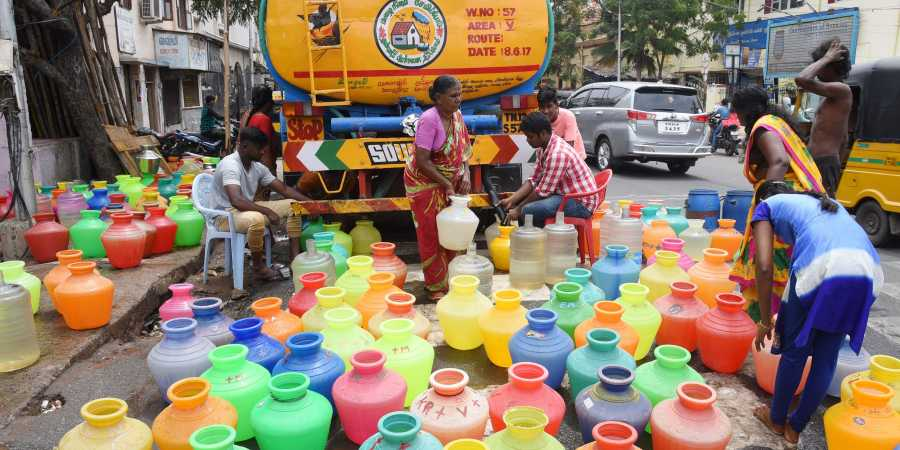
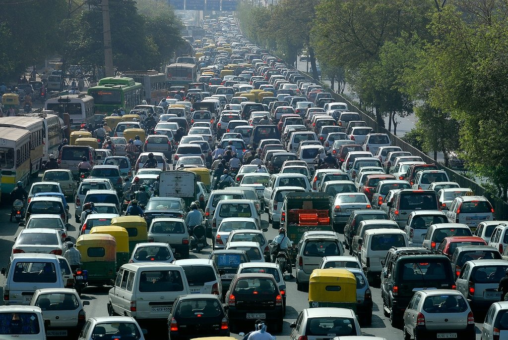

WEATHER ISSUES IN CHENNAI

WATER ISSUES:
Chennai experiences periodic severe water crises, most recently with a significant shortage in early
2024, due to insufficient rainfall, depleting groundwater, and inefficient water management practices.
The crisis is exacerbated by increased urban demand, poor water infrastructure, illegal water tapping,
and a lack of effective solutions for water scarcity. Residents face issues with falling reservoir
levels, dried-up bore wells, high costs for private water tankers, and the closure of some businesses
and schools during peak scarcity, highlighting the city's vulnerability to drought.
Key Issues
Groundwater Over-extraction / Depletion
The Chennai aquifer system is being overused—extraction rates exceed recharge, often by large margins.
The Times of India
+2
The Times of India
+2
In many areas the groundwater table is dropping by 10-20 cm per year.
The Times of India
Some zones (Anna Nagar, Alandur etc.) have seen significant dips (nearly 1 metre) in ground levels over
a year.
The Hindu
Loss of Water Bodies and Storage Capacity
Chennai has lost many lakes, ponds and marshlands due to urban expansion. E.g. water bodies’ area
greatly reduced in the past decades.
The Economic Times
+1
Shrinking reservoir capacities, siltation, sedimentation and lack of proper maintenance of tanks.
The Hindu
+1
Poor Water Quality & Contamination
Supply water often gets polluted en route due to corroded pipelines, leaks, mixing with sewage etc. One
in five taps reportedly serve contaminated water.
The Times of India
+2
The New Indian Express
+2
Industrial waste, dumping, and seepage from dumpyards pollute both surface water and groundwater.
The Hindu
+1
Inadequate Rainwater Harvesting / Recharge
Urbanisation, concrete surfaces, loss of pervious land leads to less recharge of groundwater.
The Economic Times
+2
The Hindu
+2
Existing rules or schemes for rainwater harvesting are often poorly enforced.
The Hindu Business Line
+1
Supply vs Demand Gap
Demand for potable / daily water is rising with population growth and urban sprawl. Supply
infrastructure often lags.
Water Center
+1
Periods of drought or monsoon failure exacerbate shortages.
Water Center
Flooding / Waterlogging during Rain / Monsoon
Despite having heavy rains, poor drainage, blocked storm drains, encroachments lead to waterlogging.
Storm-water drainage infrastructure sometimes is inadequate or encroached upon.
The Hindu
+2
The Hindu Business Line
+2
Some regions lose catchment due to construction; water which should flow into ponds or tanks gets
diverted, causing flooding.
The Economic Times
+1
Governance & Institutional Weaknesses
Coordination issues: different agencies handling lakes, flood control, groundwater etc. often not
synchronized.
The Hindu Business Line
Regulations exist but enforcement is weak; monitoring of water quality, illegal borewells, illegal
encroachments often insufficient.
The Hindu Business Line
The Hindu
Impacts
Health risks from poor water quality (skin issues, gastrointestinal diseases etc.).
The New Indian Express
The Hindu
Water scarcity during summers; many residents depend on tanker water, borewells, or buying packaged
water.
The New Indian Express
The Economic Times
Stress on infrastructure and costs (repairing pipelines, treating water, etc.).
Environmental degradation: drying up of wetland ecosystems, loss of groundwater recharge, land
subsidence perhaps over time.
Possible Solutions / Mitigations
Strict regulation of groundwater usage
Licensing / metering of borewells, penalties for overuse.
Incentives to reduce groundwater dependency.
Catchment protection and restoration
Restore lakes, tanks, ponds; remove encroachments.
Desilt reservoirs to increase capacity.
Rainwater harvesting and recharge
Make rainwater harvesting mandatory in buildings.
More rain-recharge areas (permeable pavements etc).
Improving pipe infrastructure and water distribution
Replace old corroded pipes; fix leaks.
Ensure treated water stays clean in distribution (avoid cross contamination).
Better urban planning
Leave space for water bodies; avoid paving over natural drainage.
Stormwater drainage plans integrated into city expansion.

CHENNAI TRAFFICE ISSUES:
Chennai's traffic issues stem from factors like insufficient and poorly marked diversions during
infrastructure work, resulting in significant congestion and confusion. Other contributing factors
include the large volume of vehicles, especially single-occupant cars, coupled with inadequate road
infrastructure and ongoing construction projects. Addressing these problems requires better traffic
management, clearer signage for diversions, infrastructure improvements like road widening, and
increased public transit use to reduce the number of cars on the road.
Key Traffic Issues in Chennai
Rapid Increase in Vehicular Growth
The number of personal vehicles (cars, two-wheelers) is rising quickly, outpacing infrastructure
expansion.
Down To Earth
+1
Shortage of public transport / buses compared to demand. Many people prefer private vehicles due to
comfort or convenience.
Down To Earth
Construction & Diversions Causing Bottlenecks
Ongoing metro rail construction (both elevated and underground) has reduced road widths, blocked service
lanes etc., leading to severe congestion on major roads like Old Mahabalipuram Road / Rajiv Gandhi
Salai.
The Hindu
+2
The Hindu
+2
Frequent diversions force traffic through narrow lanes or circuitous routes, slowing down movement.
The Hindu
+1
Poor Road Conditions & Infrastructure Gaps
Roads get damaged (potholes, uneven surfaces), especially during rains; waterlogging in low-lying or
poorly drained areas makes driving difficult and slows traffic.
DD News
+2
The Hindu
+2
Lack of sufficient bridges/link roads in certain parts, limited road width or missing connectivity in
some localities.
The Hindu
Traffic Signal & Intersection Problems
Fixed-time signals that do not adapt to traffic load, leading to unnecessary waiting at some junctions.
The Hindu
Poor signal coordination across junctions. Some turning traffic gets queued up, affecting straight
movement etc.
The New Indian Express
Poor Use of Technology / Real-Time Information
Real-time traffic updates, guidance, alternate route info is limited or not universally used. Some apps
exist but coverage & awareness are issues.
The Hindu
Delay in implementing smart systems / Intelligent Transport Systems (ITS) or adaptive signals that can
help with congestion.
Possible Solutions & Mitigations
Expand & Upgrade Road Infrastructure
Build more link roads / bypasses to reduce load on existing arteries. Widening of key roads /
constructing flyovers or underpasses where feasible to remove chokepoints.
Use of Smart Traffic Systems / Adaptive Signals
Deploy adaptive or AI-powered traffic signals at busy intersections, so signal timings change based on
actual traffic flow.
Install ITS (traffic cameras, sensors) to monitor congestion, adjust signals, provide real-time data to
motorists.
Improve & Expand Public Transportation
Increase fleet size of buses, improve coverage, reliability and frequency.
Better integration between different modes (metro, suburban trains, buses) so people can switch easily.